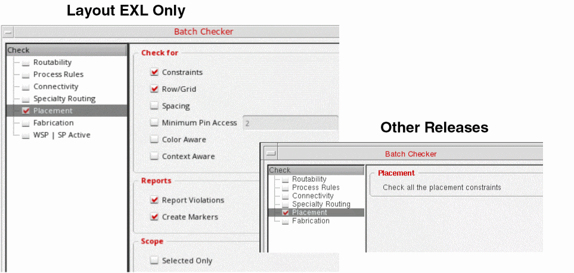

Verifying Placement
After running Virtuoso Placer, you can verify whether the placement is DRC-correct. Use the Batch Checker form to verify constraints and width spacing pattern (WSP)-specific settings in your design.
- Choose Verify – Design to open the Batch Checker form.
-
Choose Placement in the Check panel. The Placement options are displayed in the right panel of the form. The options on the Placement tab available in Virtuoso Layout EXL cockpit in advanced node releases is different from the options available in all other releases. The following snapshots show the differences:
These placement checks let you verify the constraints and width spacing pattern (WSP)-specific settings in your design. To run these checks: -
In the Check For group box, choose the required checks: Constraints, Row/Grid, Spacing, Minimum Pin Access, Color Aware, and Context Aware.
You can use Cadence Physical Verification System (PVS) Constraint Validation (CV) to run a comprehensive check of all placement and routing constraints.
Use the ignoreOverlapCheckProp environment variable to ignore overlaps between top-level instances or figGroups when verifying the placement. - In the Reports section, select how errors are to be highlighted: Report Violations or Create Markers.
- In the Scope section, choose Selected Only to run Batch Checker only on selected objects in the design. Clear the check box to run Batch Checker on the entire design.
Related Topics
Return to top